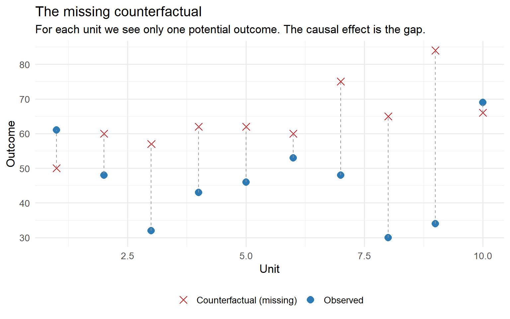
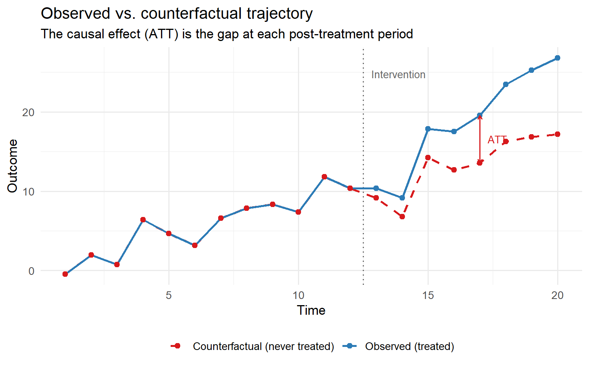
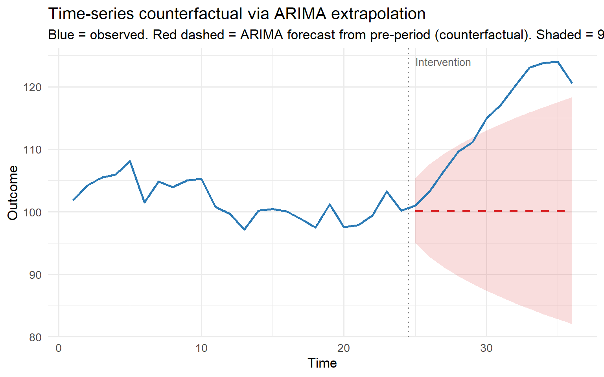
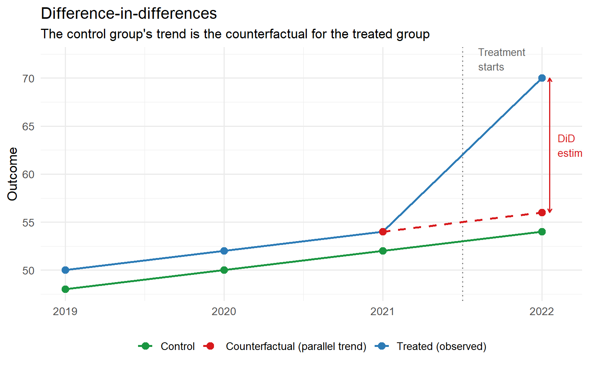
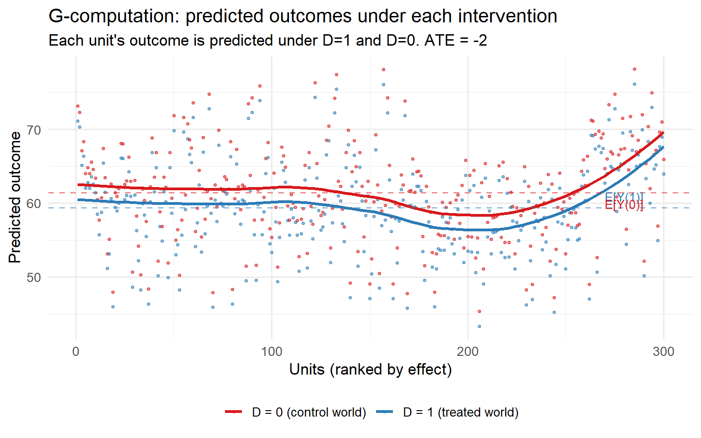
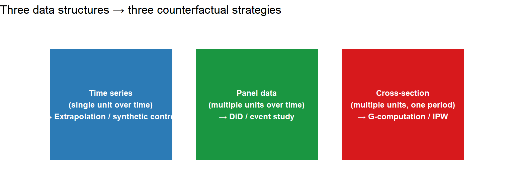

What Is a Counterfactual?
theory
causal inference
counterfactuals
The fundamental question of causal inference — what would have happened? — and how we try to answer it.
The question that changes everything
Imagine your company runs a marketing campaign in March. Sales go up 20% that month. Did the campaign work?
Most analysts would say yes. But that’s incomplete. The right question is:
What would sales have been in March if we had never run the campaign?
That hypothetical — the world where the campaign didn’t happen — is a counterfactual. And constructing a credible counterfactual is the entire project of causal inference.
This distinction matters enormously. A 20% increase in sales could mean the campaign was transformative. Or it could mean sales were going to rise anyway — seasonality, a competitor’s exit, a product going viral — and the campaign did nothing. Without a counterfactual, you can’t tell.
The Fundamental Problem of Causal Inference
Here’s the uncomfortable truth: we can never directly observe a counterfactual.
Every unit — a person, a firm, a country — exists in only one state at a time. Either they received the treatment, or they didn’t. We observe one outcome. The other is forever hidden.
Holland (1986) called this the Fundamental Problem of Causal Inference. Formally, for unit i:
\tau_i = Y_i(1) - Y_i(0)
where:
- Y_i(1) = outcome if treated
- Y_i(0) = outcome if not treated
- \tau_i = the individual causal effect
We observe either Y_i(1) or Y_i(0), never both. The individual effect \tau_i is fundamentally unobservable. This is sometimes called the missing data problem of causal inference.
Since we cannot observe both potential outcomes for the same unit, we have to construct a plausible counterfactual from other data. How we do that — and what assumptions we need — defines the entire field of causal inference.
Prediction vs. causal inference
Before going further, it’s worth being precise about what causal inference is not.
Prediction asks: given what I observe, what will happen next?
Causal inference asks: if I intervene and change X, what happens because of X?
A model can be excellent at prediction and completely useless for decision-making. The classic example: umbrella sales predict rain very well. But buying umbrellas doesn’t cause rain. If you’re a city planner deciding whether to build drainage infrastructure, “umbrella sales are high” is useful prediction but worthless causal knowledge.
Pearl (2009) formalises this with his do-calculus. Observational data gives us P(Y \mid X = x) — the distribution of outcomes given that we observe X = x. Causal inference targets P(Y \mid do(X = x)) — the distribution of outcomes if we were to set X = x by intervention. These are different objects, and confusing them is the source of most errors in data-driven decision-making.
The identification landscape: how we build counterfactuals
Since we can’t observe the counterfactual directly, every causal identification strategy is really a different answer to: which other data can stand in for the missing potential outcome?
Here are the main strategies, grouped by the type of data they exploit.
NoteMain identification strategies
| Strategy | Core assumption | Counterfactual comes from… | Key vulnerability |
|---|---|---|---|
| Randomised experiment | Treatment is randomly assigned | The control group by construction | External validity |
| Difference-in-differences | Parallel trends in the absence of treatment | A control group that moves in parallel | Parallel trends assumption |
| Synthetic control | A weighted combination of controls fits pre-treatment trends | An artificial “donor pool” composite | Interpolation bias |
| Regression discontinuity | Units just above/below a threshold are comparable | Units on the other side of the cutoff | Local validity only |
| Instrumental variables | An instrument shifts treatment but not outcomes directly | Variation induced by the instrument | Weak instruments |
| G-computation / G-formula | No unmeasured confounders (conditional exchangeability) | Predicted outcomes from a correctly-specified model | Model misspecification |
Each strategy makes a different identifying assumption. The quality of your causal claim is only as good as the plausibility of that assumption in your context.
Building counterfactuals in practice
Let’s make this concrete. Consider a simple case: we observe a unit over time, an intervention happens at some point, and we want to estimate its effect. The counterfactual is the trajectory the unit would have followed had the intervention never happened.

The Average Treatment Effect on the Treated (ATT) is the average gap between the observed and counterfactual trajectories in the post-treatment period. In the graph above, the ATT at time t is:
ATT(t) = E[Y_i(1) - Y_i(0) \mid D_i = 1]
The problem: we only observe one of the two lines. Every identification strategy is a different way of estimating the red dashed line.
Counterfactuals by data structure
The right strategy depends heavily on the structure of your data. Here I’ll sketch the three main settings — time series, panel data, and cross-sectional with covariates (the g-computation approach) — and show how each constructs the counterfactual.
Time-series counterfactuals
When you have a single unit observed over time (a country, a company, a region) and an intervention at a known date, the counterfactual is what the series would have looked like had the intervention never happened.
The key tool here is fitting a model to the pre-intervention period and extrapolating it into the post-period. This is the logic of CausalImpact (Brodersen et al., 2015), Causal ARIMA (Menchetti et al., 2022), and synthetic controls.
The credibility rests on the quality of the pre-intervention model fit and the absence of other events coinciding with the intervention.

Panel data counterfactuals: Difference-in-Differences
When you have multiple units observed over time, and only some are treated, you can use the untreated units to construct the counterfactual for the treated ones. This is the idea behind difference-in-differences (DiD).
The key assumption is parallel trends: in the absence of treatment, the treated and control groups would have followed the same trend. The counterfactual for the treated group after treatment is their pre-treatment level plus the trend observed in the control group.

The DiD estimator is:
\widehat{ATT} = \underbrace{(\bar{Y}_{treated,post} - \bar{Y}_{treated,pre})}_{\text{change in treated}} - \underbrace{(\bar{Y}_{control,post} - \bar{Y}_{control,pre})}_{\text{change in control}}
This subtracts the control group’s trend from the treated group’s change. Whatever is left — the part of the change not explained by the common trend — is the causal effect.
Cross-sectional counterfactuals: G-computation
When you have cross-sectional data with covariates and no natural control group or time series, you can still construct counterfactuals using a technique called G-computation (also called the g-formula or outcome regression approach).
The idea: fit a model E[Y \mid X, D] using observed data, then use it to predict what outcomes would have been under a hypothetical intervention — i.e., setting D = 0 for everyone, or D = 1 for everyone.
Under the assumption of no unmeasured confounding (conditional exchangeability), this gives a consistent estimate of the causal effect.

The Average Treatment Effect (ATE) under g-computation is:
\widehat{ATE} = \frac{1}{n} \sum_{i=1}^{n} \left[ \hat{E}[Y \mid X_i, D=1] - \hat{E}[Y \mid X_i, D=0] \right]
This is remarkably powerful: it works for any outcome model, handles continuous and discrete treatments, and naturally extends to heterogeneous effects (by looking at the distribution of unit-level effects rather than just the mean).
The main vulnerability is model misspecification — if the outcome model is wrong, the counterfactual predictions are wrong. This is why doubly robust estimators combine g-computation with propensity score weighting: if either model is correctly specified, the estimate is consistent.
Connecting the pieces
Each of the three approaches above is really the same idea at different levels of abstraction:
- What would have happened to this unit had things been different?
- We construct the answer using different sources of variation — time-series trends, cross-unit comparisons, or covariate-adjusted predictions.
- The causal claim is only as credible as the assumption that our constructed counterfactual is a valid stand-in for the unobserved one.

What comes next
This post has introduced the core idea. In the posts that follow, I’ll go deeper on each strategy:
- Difference-in-differences — from the canonical 2×2 case to staggered adoption and the problems with TWFE
- Synthetic control — building an artificial counterfactual from a donor pool
- G-computation and doubly robust estimators — when you have rich covariates but no natural experiment
- Event studies — how to check parallel trends and trace treatment effect dynamics over time
The through-line in all of them: every causal estimate is a counterfactual claim in disguise. The question is always whether we’ve constructed a credible one.
References
- Holland, P.W. (1986). Statistics and Causal Inference. Journal of the American Statistical Association, 81(396), 945–960.
- Pearl, J. (2009). Causality: Models, Reasoning, and Inference (2nd ed.). Cambridge University Press.
- Rubin, D.B. (1974). Estimating causal effects of treatments in randomized and nonrandomized studies. Journal of Educational Psychology, 66(5), 688–701.
- Robins, J.M. (1986). A new approach to causal inference in mortality studies. Mathematical Modelling, 7, 1393–1512.
- Baker, A., Callaway, B., Cunningham, S., Goodman-Bacon, A., & Sant’Anna, P.H.C. (2025). Difference-in-Differences Designs: A Practitioner’s Guide. Journal of Economic Literature.
- Brodersen, K.H., Gallusser, F., Koehler, J., Remy, N., & Scott, S.L. (2015). Inferring causal impact using Bayesian structural time-series models. Annals of Applied Statistics, 9(1), 247–274.
- Hernán, M.A. & Robins, J.M. (2020). Causal Inference: What If. Chapman & Hall/CRC. (Free online)
- Cunningham, S. (2021). Causal Inference: The Mixtape. Yale University Press. (Free online)